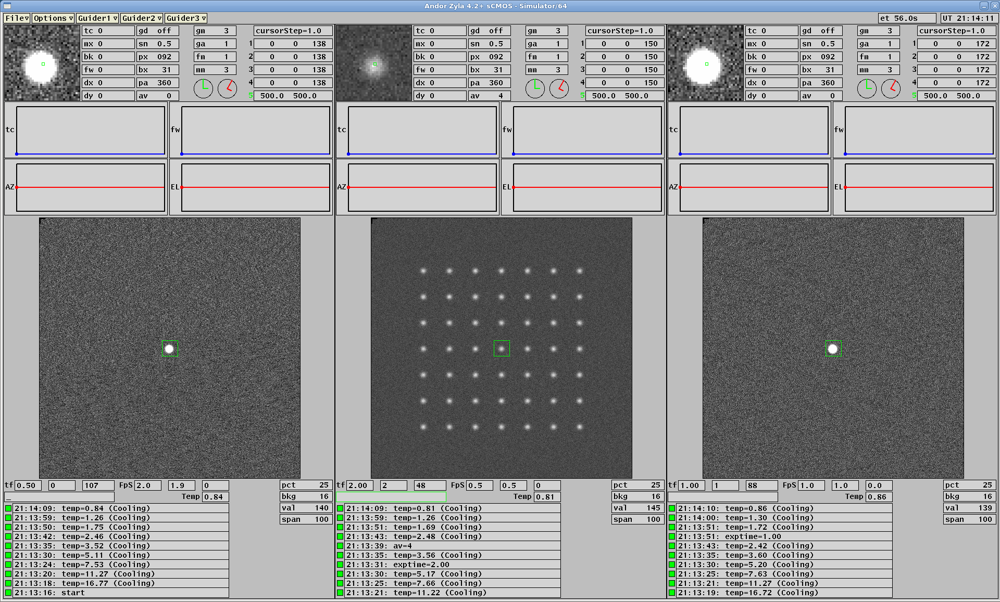
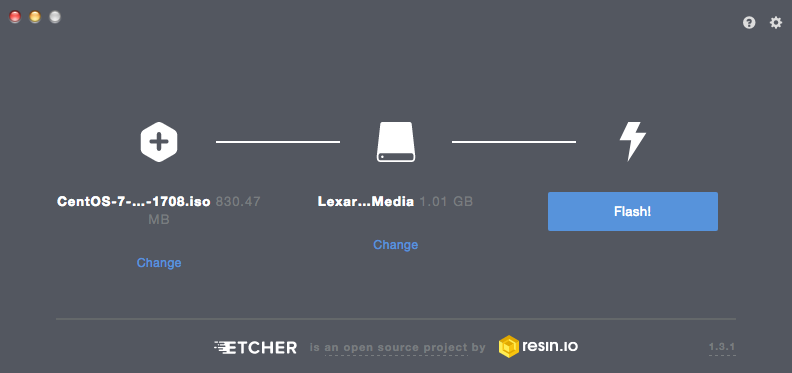

The Observatories of the Carnegie Institution for Science (Carnegie Observatories), Pasadena, CA
Christoph C. Birk (birk AT carnegiescience DOT edu)

Location of this document: http://instrumentation.obs.carnegiescience.edu/Software/ZWO/Setup/setup.html

| MAC# | arch | cpuinfo | meminfo | Linux version | Status |
| e4:5f:01:5f:c4:02 | aarch64 | 4 cores: rPi 4 Model B Rev 1.4 | 3882992 kB | Linux 6.6.51+rpt-rpi-v8 (Debian) | SBS (lab-pi-01) |
| e4:5f:01:5f:c5:c2 | aarch64 | 4 cores: rPi 4 Model B Rev 1.4 | 3883060 kB | Linux 6.6.31+rpt-rpi-v8 (Debian) | SBS |
| e4:5f:01:69:1f:b5 | armv7l | 4 cores: ARMv7 Processor rev 3 (v7l) | 3931056 kB | PiOS: 5.15.32-v7l+ | LCO |
| e4:5f:01:80:a5:13 | armv7l | 4 cores: ARMv7 Processor rev 3 (v7l) | 3931056 kB | PiOS: 5.15.32-v7l+ | LCO |
| dc:a6:32:88:00:c3 | aarch64 | 4 cores: ARMV8 (BCM2835) | 3885396 kB | Linux-6.1.21-v8+ (Ubuntu) | LCO/G2019 |
| dc:a6:32:88:01:c8 | aarch64 | 4 cores: ARMV8 (BCM2835) | 3885396 kB | Linux-6.1.21-v8+ (Ubuntu) | LCO/G2019 |
| e4:5f:01:7a:46:32 | aarch64 | 4 cores: ARMV8 (BCM2835) | 3884240 kB | Linux-6.1.0-rpi4-rpi-v8 (Debian) | LCO/PFS |
| d8:3a:dd:5b:4c:49 | aarch64 | 4 cores: ARMV8 (BCM2835) | 3884240 kB | Linux-6.1.0-rpi4-rpi-v8 (Debian) | LCO/PFS |
| e4:5f:01:8a:1e:44 | aarch64 | 4 cores: ARMV8 (BCM2835) | 3884240 kB | Linux-6.1.0-rpi4-rpi-v8 (Debian) | LCO/PFS |
| d8:3a:dd:7c:d8:22 | aarch64 | 4 cores: ARMV8 (BCM2835) | 3884240 kB | Linux-6.1.0-rpi4-rpi-v8 (Debian) | SBS/MIKE |
| e4:5f:01:7c:d8:c4 | aarch64 | 4 cores: ARMV8 (BCM2835) | 3884240 kB | Linux-6.1.0-rpi4-rpi-v8 (Debian) | SBS/MIKE |
Temperature profile with rPi-board in box with heatsinks installed (vcgencmd measure_temp):
| Exposure [s] | Frame-Rate [Hz] | CPU [%] | Temperature [C] |
| idle | 0 | 0 | 58 |
| 2 | 0.5 | 4 | 59 |
| 0.5 | 2 | 9 | 63 |
| 0.2 | 5 | 19 | 67 |
| 0.1 | 10 | 32 | 71 |
| 0.05 | 13 (670 Mb/s) | 72 | 76 |
Steps:
2021-11-09, Christoph C. Birk, Carnegie Observatories
{kind=link}
{kind=link}
{kind=link}
{kind=link}
{kind=link}
{kind=link}
{kind=link}
{kind=link}
{kind=link}
{kind=link}
{kind=link}
{kind=link}
{kind=link}
{kind=link}
{kind=link}
{kind=link}